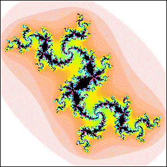

| 13. The Julia set appears to be connected, so we can assume the c value lies in the Mandelbrot set. |
|  |
| If the c value belonged to a disc attached to the cardioid, at every branch point of the Julia set, the number of branches that meet would equal the cycle number of the disc. Because we see three branches meeting at some points (the centers of the largest spirals, for instance) and five branches meeting at other points (the first branch points off the central region of the Julia set), we conclude thiat the c value belongs to a disc attached to a disc attached to the main cardioid. (In fact, the c of this Julia set belongs to a 15-cycle disc in the same position around a 3-cycle disc as that of the principal series 5-cycle disc around the main cardioid.) |
Return to Homework 10 Practice.